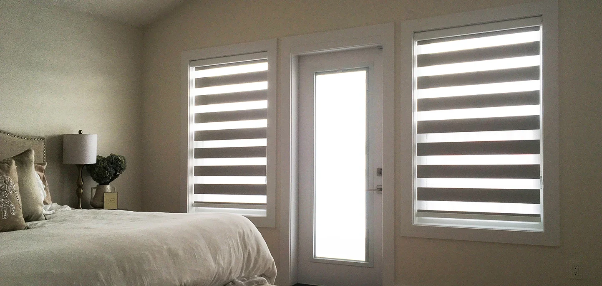

Choosing your shades
Light & privacy
Compare samples in daylight and after dark. Blackout fabric blocks light through the material, though light can still enter around the edges.
Dual or roller shades?
Dual shades have alternating bands you can shift for privacy. Roller shades use a single piece of fabric that rolls up out of view.
Before your measurement visit
Count the windows and take a photo of each frame. Tell us where glare or privacy matters most. Our team confirms the final measurements.
